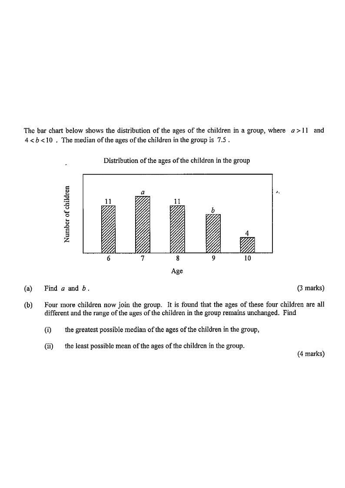

The bar chart below shows the distribution of the ages of the children in a group, where $a>11$ and $4 (a) Find $a$ and $b$. [3 marks] (b) Four more children now join the group. It is found that the ages of these four children are all different and the range of the ages of the children in the group remains unchanged. Find (i) the greatest possible median of the ages of the children in the group, (ii) the least possible mean of the ages of the children in the group. [4 marks]

Let $N$ be the total number of children. Then
$$N=11+a+11+b+4=a+b+26$$
With median $7.5$, the two middle values (the $\tfrac{N}{2}$-th and $\left(\tfrac{N}{2}+1\right)$-th) must be $7$ and $8$, so $N$ must be even. Hence
$$a+b+26 \text{ is even} \;\Longleftrightarrow\; a+b \text{ is even.}$$
Children with age $\le 7$: $\;11+a$. Children with age $\ge 8$: $\;11+b+4=b+15$.
The lower half of the ordered list must end at age $7$, and the upper half must start at age $8$. Since $a>11$ and $b<10$,
$$\underbrace{a+11}_{\text{age}\le 7}=\underbrace{b+15}_{\text{age}\ge 8}$$
$$\Rightarrow\; a = b+4$$
Since $a=b+4>11$, we get $b>7$; together with $b<10$ and $b$ an integer,
$$b\in\{8,\,9\}$$
Case 1: $b=8 \Rightarrow a=12$. Case 2: $b=9 \Rightarrow a=13$.
Both keep $a>11$ and $4 $$\boxed{a=12,\;b=8}\qquad\text{or}\qquad \boxed{a=13,\;b=9}$$
Before joining, the group has $N=a+b+26$ children. After the four children join there are $N+4$ children.
The four ages are all different, so at most one of them can be $7$. To push the median upward, choose the smallest possible ages but distinct:
Then the ordered list of all $N+4$ children ends its lower half at age $9$, giving median
$$\text{greatest possible median}=9$$
(Check: with $6,7,8,9$ added, the middle pair straddles age 9; any larger choice would raise the central values and cannot keep the "greatest median" achieved here.)
Now add the four smallest distinct ages that keep the range $6$–$10$ unchanged: $\;6,\,7,\,8,\,9$.
Total before joining: $\;11(6)+a(7)+11(8)+b(9)+4(10)$.
Case 1: $a=12,\;b=8$
$$\bar{x}=\frac{12\cdot 6+13\cdot 7+12\cdot 8+9\cdot 9+4\cdot 10}{12+13+12+9+4}=\frac{66+91+96+81+40}{50}=\frac{374}{50}=7.48$$
Case 2: $a=13,\;b=9$
$$\bar{x}=\frac{12\cdot 6+14\cdot 7+12\cdot 8+10\cdot 9+4\cdot 10}{12+14+12+10+4}=\frac{72+98+96+90+40}{52}=\frac{396}{52}\approx 7.6154$$
The smaller value is $7.48$, so the least possible mean is
$$\boxed{7.48}$$
Question. The table shows the ages of the children in a group: age \\(4\\), \\(9\\) children; age \\(5\\), \\(a\\) children; age \\(6\\), \\(9\\) children; age \\(7\\), \\(b\\) children; age \\(8\\), \\(5\\) children, where \\(a>9\\) and \\(3
(b) Find the mean age of the group when \\(a=10\\) and \\(b=5\\), correct to 3 significant figures.